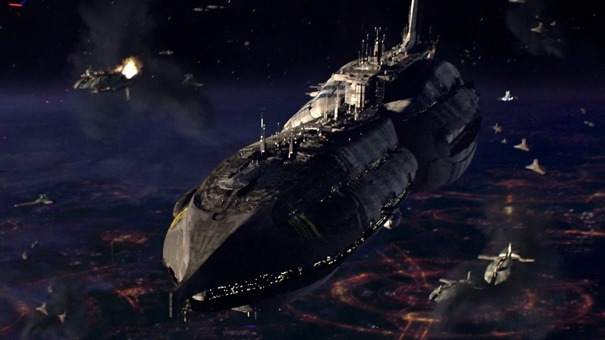

|
 InvisibleHand csatahajó60 000 000
|
InvisibleHand csatahajó történeteAz InvisibleHand egy módosított Providence-osztályú Dreadnought volt, amely a Független Rendszerek Konföderációjának haditengerészeti erőiben szolgált a flotta zászlóshajójaként és a kaleesi szeparatista Grievous tábornok parancsnoki hajójaként a klónháborúk alatt. A Providence-osztály első rettegett hajóját, az InvisibleHand-et valamikor a klónháborúk kitörése előtt építették a Pammant bolygón a Szabad Dac Önkéntes Mérnöki Testület és a Pammant Dokkok Quarren mérnökei. A hadihajó megépítése után a Kereskedelmi Szövetség magánflottájában kezdte meg aktív szolgálatát, Nute Gunray alkirály tulajdonában. Felszerelése
|